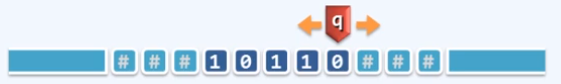
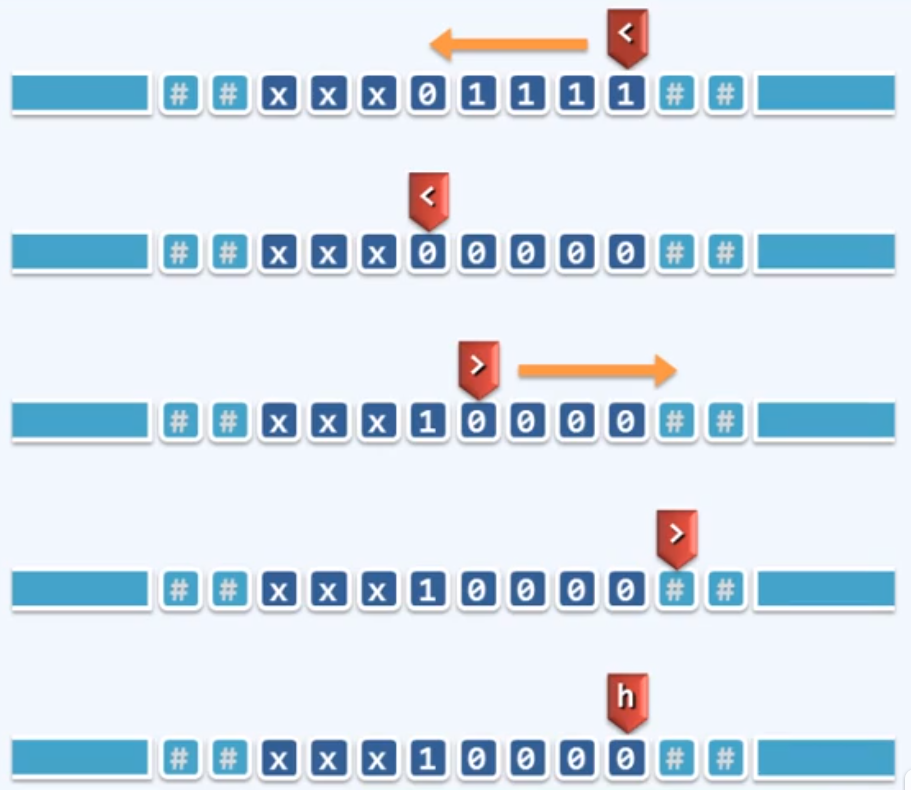

Tape - 依次均匀地划分为单元格，各注有某一字符，默认为'#'
Alphabet - 字符的种类有限
Head - 也叫“读写头”，总是对准某一单元格，并可读取和改写其中的字符。每经过一个节拍，可转向左侧或右侧的邻格。
State - 状态，TM总是处于有限种状态中的某一种。每经过一个节拍，可（按照规则）转向另一种状态。
Transition Function: (q, c; d, L/R, p)

将二进制非负整数加一
全'1'的后缀翻转为全'0'，原最低位的'0'或'#'翻转为'1'
51(<, 1, 0, L, <) //左行，1->02(<, 0, 1, R, >) //掉头，0->13(<, #, 1, R, >) //若是最高位，则会遇到#，也要掉头，此时有溢出4(>, 0, 0, R, >) //右行5(>, #, #, L, h) //复位(因为alg需要有确定的输入，每次复位能保证下次的输入和上次一样)